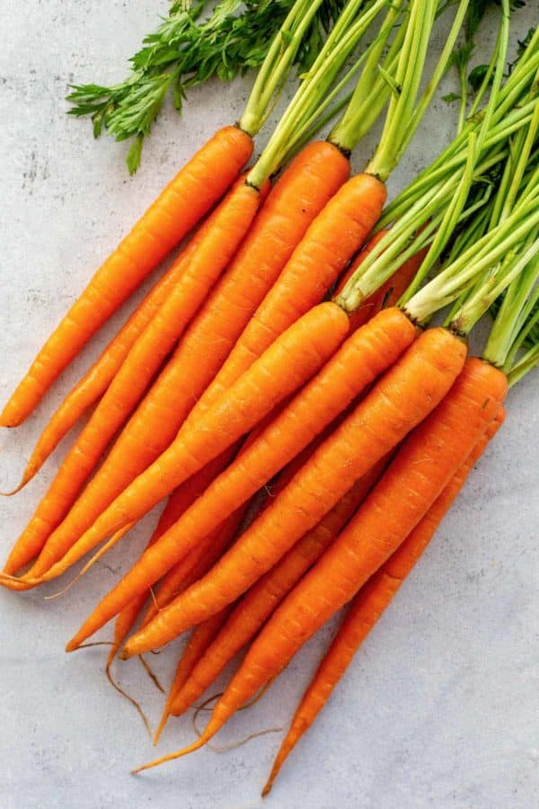
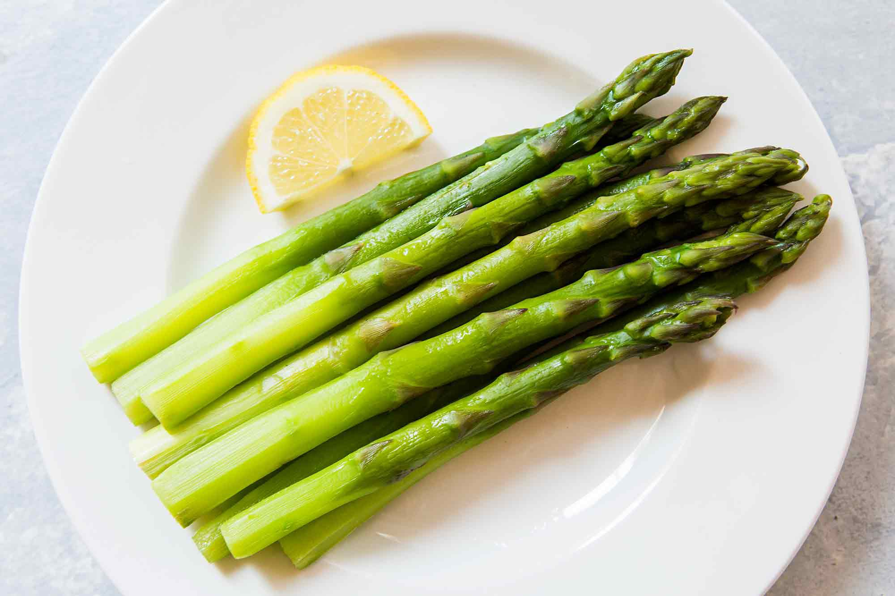

Some Favourites
Wild and Wacky Vegetables
Tom Robbins
Some Diseases
| Veggie | Disease |
|---|---|
| Beet | Beeturia |
| Carrots | Carotenosis |

|
 |  |
BeetsCareful not to get your hands dirty. |
CarrotsNot sticks, can motivate. |
AsparagusSpears, spears, spears. |
Really informative
Kale courgette salsify mustard broccoli seakale wakame potato fava bean tigernut leek celery spinach avocado cabbage celtuce rutabaga kohlrabi. Parsnip pea soko groundnut bitterleaf spring onion. Grape dulse rutabaga lentil gram kakadu plum water spinach cabbage lotus root.
Mung bean quandong kale prairie turnip celery gram zucchini pumpkin green bean silver beet chard endive komatsuna eggplant kakadu plum radish broccoli. Arugula amaranth fennel wakame peanut garlic chickweed. Sorrel jícama quandong kale chickpea water chestnut rock melon aubergine lettuce pea azuki bean cress onion sea lettuce dandelion nori dulse rutabaga. Coriander napa cabbage bok choy carrot kakadu plum brussels sprout bamboo shoot salad okra cucumber garlic kombu beet greens cauliflower summer purslane. Artichoke daikon horseradish arugula taro catsear kombu rock melon pea sprouts collard greens mustard courgette lettuce soko maize plantain.